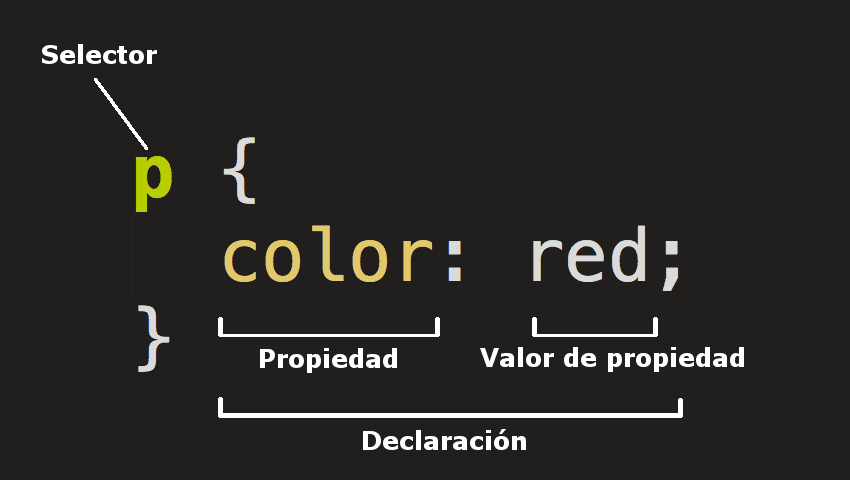

Ejercicio 1: Entendiento CSS
1.1- ¿Qué significa CSS?
CSS(Hojas de Estilo en Cascada) es el código que usas para dar estilo a tu página web. CSS serán propiedades para lograr que un elemento HTML tenga un resultado visual esperado.
1.2- ¿Para qu√© sirve el CSS? ¿Qu√© programa se utiliza para interpretar el CSS? (es para ü߆)
El CSS sirve para darle color, diseño, tamaño a nuestra pagina web. Este codigo se interpreta por un browser como, por ejemplo, firefox, ya que estos estan diseñados para presentar estos diseños.
1.3- ¿A qué se llama regla de CSS?
El CSS es un lenguaje basado en reglas: cada usuario define las reglas que especifican los grupos de estilos que van a aplicarse a elementos particulares o grupos de elementos de la página web.
1.4- ¿Cuál es la anatomía de la regla de CSS? Agregar imagen explicativa y utilizando una lista descriptiva explicar sus elementos.
La regla está compuesta por los siguiente elementos:
- Selector:
- Selecciona el(los) elemento(s) a dar estilo.Para dar estilo a un elemento diferente, solo cambia el selector.
- Declaración:
- Aplica las propiedades que querés dar al elemento seleccionado en el Selector. En este caso hay una sola regla, pero puede haber más.
- Propiedades:
- Es lo que te permite dar un estilo a un elemento HTML. En el ejemplo la propiedad es color que le dará color a las letras de los párrafos. Siempre las propiedades se ubicarán a la izquierda
- Valor de la propiedad:
- Las propiedades deben tener un valor. Cada propiedad tiene valores definidos. Cada valor se ubicará a la derecha.
1.5- ¿Qué es un selector en CSS?
El CSS tendrá diferentes tipos de selectores, un selector nos permitirá aplicar estilos a elementos específicos de HTML. De esta forma es posible ser preciso al momento de aplicar diseño a un sitio web. En resumen, se utilza para dar estilo a un elemento particular de HTML.
1.6- Identificar y definir los selectores: de ID, de clases, universal, de etiquetas, descendente.
Selectores:
- Selector Universal
- Nos permite aplicar estilos a todos los elementos HTML de un documento y se indica mediante el *. Lo que genera que todos los elementos HTML queden del color que elgimos quden de ese color. Por ejemplo, rojo.
- Selector de etiqueta
- Aplicaremos propiedades CSS a una etiqueta. La misma se identifica sin utilizar "<>".Podemos, seleccionar varias etiquetas al mismo tiempo concatenándolas con el signo,(coma). Tanto la p como la h1 tendrán de color de letra roja. Reordar que se aplicarán a todas las etiquetas del documento HTML.
- Selector por etiquetas
- Podemos, seleccionar varias etiquetas al mismo tiempo concatenándolas con el signo coma. Tanto la p como la h1 tendrán de color de letra roja. Reordar que se aplicarán a todas las etiquetas del documento HTML.
- Selector descendente
- Con este selector seleccionamos un elemento que está dentro de otro del mismo tipo. Estos seectores siempre están formados por dos o más selectores separados entre si. El último selector será el elemento HTML al que se le aplicará las propiedades de CSS.
- Selector de clases
- Indica al navegador que elementos HTML se seleccionan para aplicarles una regla que incluye los valores de las propiedades.
- Selector de ID
- Este tipo de selector es igual al de clase, aunque lo aplicaremos a un único elemento HTML de nuestra página. Esto se debe a que el atributo ID de HTML identifica a un elemento HTML por medio de un nombre.
1.7- Explicar brevemente utilizando una lista ordenada: ¿cómo funciona el CSS?
- El navegador carga el HTML
- Convierte el HTML a un DOM. El DOM representa el documento.
- El navegador busca los recursos del archivo HTML. Por ejemplo, una imagen.
- El navegador analiza el CSS y las ordenas para identificar los diferentes selectores. Por ejemplo,
ID.
Para cada selector que identifique, calcula qué reglas deben aplicarse y qué nodos de DOM se les aplica.
- El árbol de renderización presenta la estructura en que los nodos deben aparecer después de aplicarle las reglas
- Por último, se mostrara el resultado visual en la pantalla (a esta etapa se llama pintura)
1.8- ¿Cuáles son las tres formas para vincular CSS con HTML?
- Utilizando la etiqueta style
- Utilizando el atributo style
- Utilizando un archivo externo
1.9 Ingrese al sitio CSS Zen Garden y analicemos el código HTML
Las etiquetas dentro de body ¿son iguales? ¿Qué es lo distinto? ¿Qué contribuye al cambio de diseño?
La estructura HTML es igual, siempre es igual. Lo unico que cambia es el estilo, cada uno tiene un estilo diferente pero la estructura sigue siendo la misma.
En líneas generales, el mismo HTML ¿puede tener diferentes diseños?
La estructura HTML es la misma, lo que cambia es el estilo. Si,puede tener diferentes diseños.
Ejercicio 2: Práctica Inicial de CSS
2.0 Completar la columna de valores posibles para cada propiedad.
| Propiedad | Descripción | Valores posibles |
|---|---|---|
| Color | Define el color del texto. | color: currentcolor; color: orange; color: #009900; color: rgb(34, 12, 64, 0.6); |
| background-color | Define el color de fondo de un elemento | color transparent |
| font-size | Define el tamaño de la fuente del texto. | medium xx-small, x-small, small, medium, large, x-large, xx-large larger, smaller longitud |
| font-weight | Define el grosor de la fuente del texto (por ejemplo, si se trata de texto en negrita o normal). |
Normal bold lighter bolder |
| font-style | Define el estilo de la fuente del texto (por ejemplo, si es cursiva o normal). |
normal italic oblique |
| font-family | Define el tipo de letra a utilizar para el texto. | nombre de familia o genérico nombre nombre de familia nombre genérico |
| text-align | Define la alineación horizontal del texto (izquierda, centro o derecha) |
start end center justify |
| text-decoration | Define la decoración del texto (por ejemplo, si está subrayado o tachado). |
text-decoration
-color -style -line |
| text-transform | Define la transformación del texto (por ejemplo, en mayúsculas o minúsculas). |
none uppercase lowercase |
| letter-spacing | Define el espacio entre letras. | first-letter |
| line-height | Define la altura de línea del texto. | normal numero porcentaje longitud |